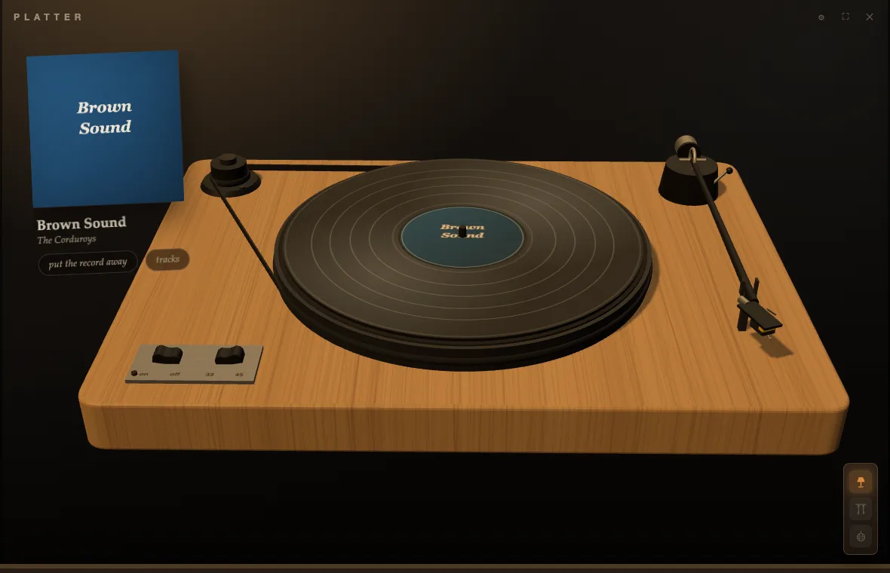
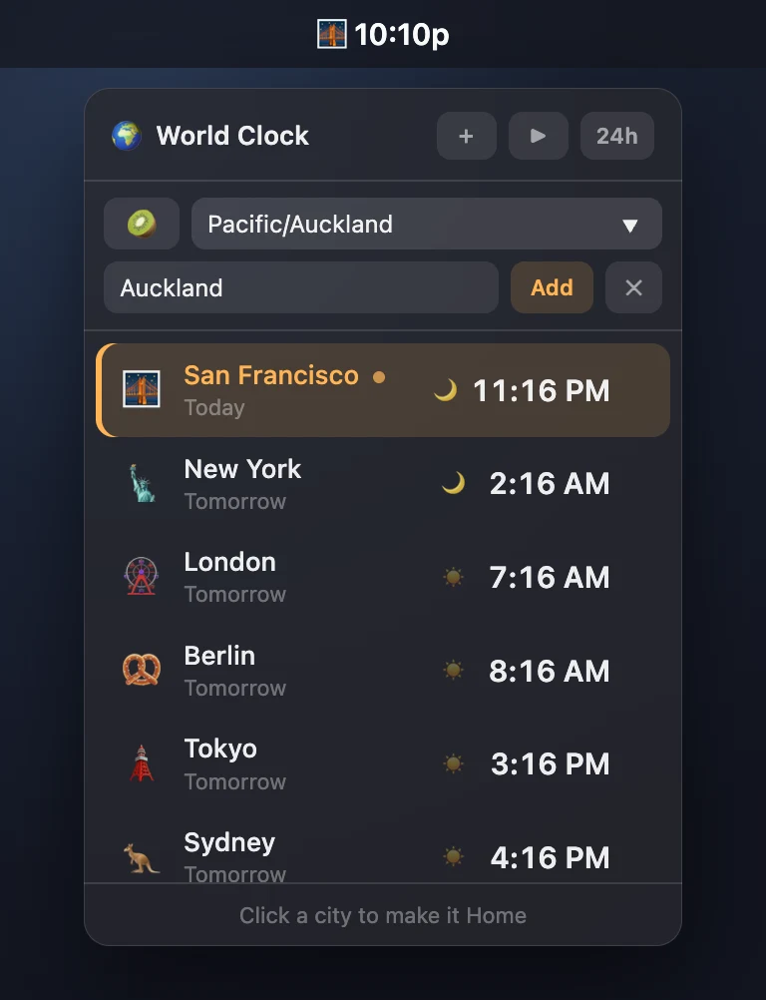
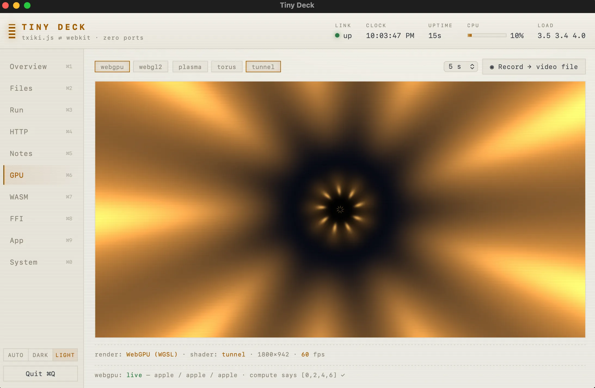

Desktop apps
in ~6 MB.
A JavaScript backend with full system access, a native webview window (WebKit on macOS, WebView2 on Windows, WebKitGTK on Linux), and nothing else. No Electron. No bundled Chromium. No HTTP server. No ports.
curl -fsSL https://tinyjs.app/install | sh
irm https://tinyjs.app/install.ps1 | iex
curl -fsSL https://tinyjs.app/install | sh
sudo apt install libwebkit2gtk-4.1-0) · MITShipped app size
What you get
Page ⇄ backend RPC over a Unix socket in a private temp dir. Nothing listens, nothing collides, nothing to scan.
Backend runs on txiki.js — files, sockets, processes, FFI, sqlite, fetch, WebSocket.
Frontend edits swap into the live window; backend edits restart the process. No build step in dev.
Real menu bar (About + Quit included), file panels, alert / confirm / prompt — answered by AppKit, not divs.
tinyjs build emits a codesigned, notarization-ready bundle with your icon.
Point the window at a URL and it behaves like a browser — dialogs, downloads, popups, find — with a capability gate deciding what that origin may call.
Every project ships a skill file, so coding agents already know the whole API.
See it running
A 4.4 MB native app that shelves every example and installs, updates, and removes them in one click. The catalog updates itself from the examples repo — and carries per-platform downloads.

Player, playlist, 10-band EQ and six visualizer engines, each pane a real native window that snaps, docks and windowshades. Plus a podcast deck and a fullscreen 80s hi-fi mode with VU needles and a world-radio globe. Plays mp3 · m4a/aac · flac · wav · aiff · caf · ogg/opus — and, synthesized on the fly in-app, MIDI (real SoundFont banks) and tracker modules (mod · s3m · xm · it, via the OpenMPT engine). A webview can't play any of those last two; amp renders them itself.
⬇ .dmg · 7.4 MB ⬇ .zip · 6.7 MB ⬇ .tar.gz x86_64 arm64 source ↗
One window per document, editor/preview split, clickable task
boxes, themed PDF and HTML export, lossless closing. Double-click
any .md in Finder and it opens
here.

Albums, one side at a time, and deliberately slow. Point it at a
music folder and the scanner reads it the way a person would:
Artist/Album/ trees, year
prefixes stripped, CD1/CD2 merged back into one LP,
an artist's strays filed as Singles. No library to commit to
— it ships with a sample record to spin, and connects Spotify if
you'd rather bring your own.

The tray is the app: your home city as an emoji, ticking every second — 🌉 4:45p — and a click drops a vibrancy popover centred under the icon with each city's time, day offset and a day/night dot. It dismisses itself on focus loss like a real popover, and stops redrawing entirely while hidden — the backend alone keeps the bar ticking. Turn on cycling and it rotates through the cities.
Best on macOS and Linux, whose menu bar and app indicator can show live text. It runs on Windows, but a tray icon there carries no label — the clock becomes something you hover to read, which rather misses the point.
⬇ .dmg · 4.4 MB ⬇ .zip · 3.7 MB ⬇ .tar.gz x86_64 arm64 source ↗
Thirteen tabs of live demos: shell, files, HTTP, GPU, WASM, FFI, windows, tray, hotkeys, share sheets, screenshots, battery, clipboard, Spotlight. If you want to know what a call does, press it.
⬇ .dmg · 5.6 MB ⬇ .zip · 4.9 MB ⬇ .tar.gz x86_64 arm64 source ↗Quick start
terminal
tinyjs new myapp cd myapp tinyjs dev # window opens, hot reload tinyjs build # dist/myapp.app, signed # (win/linux: dist/myapp.exe or dist/myapp)
src/main.js — the whole backend
export const api = { hello: async ({ name }) => `hi ${name}`, };
in the page
await tiny.api.call('hello', { name }); tiny.menu.set([…]); await tiny.dialog.openFile();
how it fits
Questions
| backend | window | ships | ports | |
|---|---|---|---|---|
| electron | Node.js | bundled Chromium | ≥ 150 MB | none |
| tauri | Rust, compiled | system webview | ~10 MB | none |
| neutralino | none — page-side only | system webview | ~3 MB | localhost ws |
| tinyjs | JavaScript (txiki.js) | system webview | ~6 MB | none |
Everything below is the honest version, caveats included — including the parts where another tool is the better answer.
How is this different from Electron?
Electron ships an entire Chromium and an entire Node with every app. That is where the ≥ 150 MB goes, and why every app on your machine carries its own browser to patch. tinyjs renders in the webview the OS already ships and runs its backend on a 5.6 MB JS runtime, so the same app is ~6 MB.
What you give up: one identical rendering engine on every platform, native Node addons, and a decade of Electron-shaped tooling. What you keep: writing the whole app — backend included — in plain JavaScript.
How is this different from Tauri?
Same shape — system webview, small binary — and Tauri does it well. Two real differences. The backend is JavaScript, not Rust, so there is no compile step and no second language in the project. And the OS surface — dialogs, menus, tray, clipboard, keychain, notifications, global hotkeys, auto-update — is just the API, not plugins you add one at a time.
Tauri's ecosystem, mobile targets and cross-platform bundler are further along. If you want Rust in your stack, or you want mobile, use Tauri.
What about Neutralino?
Closest in spirit, and smaller still. The difference is that Neutralino has no backend runtime: your code runs in the page, and the OS API is proxied over a localhost websocket server — a real port, guarded by a token. Logic the built-in API doesn't cover means writing an "extension": a separate process, usually in another language.
tinyjs gives you a real JS process with full system access —
files, sockets, subprocesses, FFI, sqlite — talking to the page over
a Unix socket in a 0700 temp dir. Nothing listens,
nothing collides, nothing to scan.
Will my app look the same on all three platforms?
No, and that's the deal you're making. You get the OS's own
engine: WebKit on macOS, Chromium-based WebView2 on Windows,
WebKitGTK on Linux. It's the same discipline as shipping a website
to Safari and Chrome — modern CSS and JS are fine, the edges differ.
Linux has the sharpest ones: media codecs depend on which GStreamer
plugins are installed, and Web Audio through
ctx.destination crackles under WebKitGTK, so audio apps
play the element directly there.
The upside of not bundling an engine: it updates with the OS, so
you're not shipping a release every time a browser CVE lands. The
cost: test on all three. Native calls that aren't ported to a
platform fail cleanly with a reason (or resolve null),
so cross-platform code can feature-detect rather than crash.
Can I use React, Vue, Svelte, TypeScript, npm?
tinyjs new myapp --template react-ts — also vue-ts,
svelte-ts, solid-ts, vanilla-ts — scaffolds a Vite app wired to
tinyjs. tinyjs dev runs the Vite dev server with HMR
inside the native window; tinyjs build ships the built
assets. TypeScript backends bundle through esbuild automatically,
which is also what makes npm packages usable on the backend.
The default template is the opposite: zero dependencies, plain
HTML/CSS/JS, no build step at all. The frontend is served as real
files over file://, so relative scripts and images just
work.
Do I need Node installed?
Not for the runtime, and not for the CLI — both run on txiki.js (QuickJS + libuv), which is the 5.6 MB the install brings with it. Your backend gets fetch, WebSocket, sqlite, FFI, sockets, processes and the filesystem out of the box.
You need Node and npm only if you pick a Vite template, and only
at dev and build time — nothing from it ships in the app. Native
Node addons (.node) don't apply here; pure-JS packages
bundle fine.
Can I build a Windows app from my Mac?
No. tinyjs build packages the host platform's
launcher with the host's signing tools, so you build on the OS you
ship for. A three-legged CI matrix covers it in one push — that's
how tinyjs itself releases macOS, Windows and both Linux
architectures from a single tag.
Is it production ready?
macOS is the primary platform and is stable. Windows and Linux are beta — same runtime, same wire protocol, same API, with a short list of unported calls (mostly the genuinely macOS-only ones: Quick Look, OCR, AppleScript, on-device AI). MIT licensed, and the whole thing is two native files plus your code, so there isn't much to be surprised by.
Can I wrap a website I already have?
Yes — point the window at a URL and it behaves like a browser:
JS dialogs, downloads, popups, find-on-page, and a navigation policy
you control. A capability gate in tinyjs.json decides,
per origin, which parts of the native API that page
may call; anything not listed can't reach the backend at all.
How do I sign, notarize and ship updates?
tinyjs build emits a codesigned macOS bundle (add
--dmg for the installer image); tinyjs
notarize submits it and staples the ticket. Windows gets a
portable dist/ folder, Linux a per-arch tarball whose
app registers its own .desktop entry on first run.
tinyjs publish writes a zip plus a manifest you host
on any static server. The app's built-in updater verifies sha256 and
the code signature, swaps in place, relaunches, and rolls back on
failure.
What about iOS and Android?
No — this is a desktop runtime. macOS, Windows and Linux, each using the webview that platform already has.
Why ~6 MB and not 1 MB?
5.6 MB of it is the txiki.js binary — QuickJS, libuv, sqlite, wasm — and ~380 KB is the launcher that owns the window. Your HTML, CSS and JS are the rest. Building the runtime without wasm and sqlite would save roughly 2 MB for apps that don't need them; it's a measured direction, not a promise.